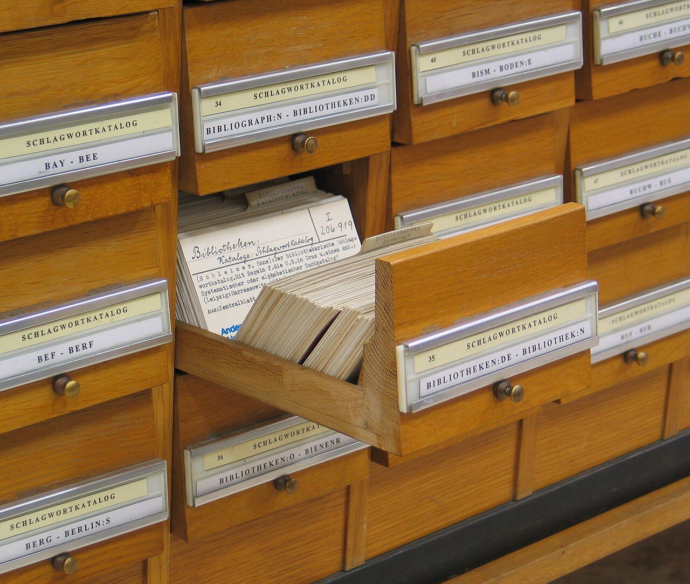

데이터베이스
안전하게 저장하고 빠르게 찾기
학교에는 학생 수백 명의 이름, 반, 성적이 적힌 기록이 있습니다. 공책 한 권에 적어 두면 여러 선생님이 동시에 고칠 수 없고, 한 명을 찾으려면 처음부터 넘겨 봐야 합니다. 많은 정보를 여러 사람이 동시에 쓰고, 빨리 찾고, 잃어버리지 않게 보관해 주는 프로그램이 데이터베이스입니다.
- 데이터베이스가 왜 필요한지 말할 수 있습니다.
- 정보를 표로 나눠 담고 서로 잇는 방법을 설명할 수 있습니다.
- 원하는 정보를 찾는 명령(SQL)을 읽을 수 있습니다.
- 여러 사람이 동시에 고쳐도 정보가 꼬이지 않게 하는 방법을 알 수 있습니다.
17.1파일 하나로는 왜 안 될까#
그러면 컴퓨터 파일 하나에 적으면 어떨까요? 혼자 쓰는 메모라면 그것으로 충분합니다. 그런데 쓰는 사람이 늘면 세 가지 사고가 납니다.
- 여럿이 동시에 고칩니다. 두 선생님이 같은 파일을 각자 열어서 고칩니다. 나중에 저장한 쪽이 먼저 저장한 쪽을 덮어씁니다.
- 쓰다가 꺼집니다. 반쯤 저장했을 때 전기가 나가면 깨진 파일이 남습니다.
- 찾기가 느립니다. 한 명을 찾으려면 첫 줄부터 차례로 읽어야 합니다.
은행은 같은 문제를 오래전에 풀었습니다. 손님마다 돈이 얼마 있는지 적어 둔 장부는 금고 안에 있습니다. 손님은 장부를 직접 만지지 못합니다. 하고 싶은 일을 신청서에 적어 내면 창구 직원이 대신 고칩니다.
직원은 세 가지를 책임집니다. 손님이 한꺼번에 와도 줄을 세웁니다. 하다가 만 일은 없던 일로 되돌립니다. 장부에 찾아보기를 만들어 원하는 쪽을 바로 폅니다.
컴퓨터에서도 똑같이 합니다. 그림의 아랫줄을 왼쪽부터 봅시다.
- 내 앱은 손님입니다. 정보를 읽고 쓰려는 프로그램입니다.
- SQL은 신청서입니다. 부탁할 일을 적는 언어입니다.
- DBMS는 창구 직원입니다. 장부를 혼자 맡아 지키는 프로그램입니다.
- 디스크의 표는 금고 속 장부입니다. 1장의 창고인 저장장치(디스크)에 적으므로 전원을 꺼도 남습니다.
이 장부 묶음이 데이터베이스(database)입니다. 줄여서 DB라고 부릅니다. DBMS는 "데이터베이스 관리 시스템"(Database Management System)을 줄인 말입니다. PostgreSQL, SQLite 같은 프로그램이 널리 쓰입니다. 평소에는 장부와 직원을 합쳐서 데이터베이스라고 부를 때가 많습니다.
17.2표, 행, 열: 칸이 정해진 장부#
출석부를 떠올려 봅시다. 맨 윗줄에 "번호", "이름" 같은 칸 제목이 있습니다. 그 아래로 학생이 한 줄에 한 명씩 적혀 있습니다. 데이터베이스도 정보를 이런 표에 담습니다. 영어로는 테이블(table)이라고 합니다.
표의 가로 한 줄을 행(row)이라고 합니다. 출석부에서는 학생 한 명이 한 행입니다.
세로 한 칸은 열(column)이라고 합니다. "이름" 열에는 이름만 적듯이, 한 열에는 같은 종류의 값만 들어갑니다.
동네에 컴퓨터 용품을 파는 작은 가게가 있습니다. 가게는 표 두 개를 씁니다. 단골손님을 적는 회원 표와, 누가 무엇을 샀는지 적는 주문 표입니다.
표와 열의 이름은 보통 영어로 짓습니다. 회원 표 members의 열은 번호(id), 이름(name), 전화번호(phone)입니다. 주문 표 orders의 열은 주문 번호(id), 회원 번호(member_id), 물건(item), 금액(amount)입니다. 서연의 전화번호 칸에 적힌 NULL은 비어 있다는 표시이고, 뒤에서 다시 봅니다.
행마다 붙이는 번호: 기본 키
한 학교에 김민지가 두 명 있으면 이름만으로는 누구인지 알 수 없습니다. 그래서 학생마다 겹치지 않는 학번을 붙입니다.
표도 행마다 겹치지 않는 번호를 붙여서 "바로 그 행"을 가리킵니다. 이 번호를 기본 키(primary key)라고 합니다. 그림에서 파란색으로 칠한 id 열입니다.
다른 표를 가리키는 번호: 외래 키
주문 표에는 손님 이름이 없습니다. 대신 member_id 칸에 회원 표의 id를 적습니다. 101번 주문의 member_id는 1이므로 키보드를 산 사람은 1번 회원 김민지입니다. 이렇게 다른 표의 기본 키를 적어 두는 칸을 외래 키(foreign key)라고 합니다.
직원(DBMS)은 이 칸도 지킵니다. 회원 표에 없는 9번을 적은 주문은 거절합니다.
칸마다 정해 둔 규칙
표를 만들 때는 어떤 열을 둘지, 칸마다 무엇을 적을 수 있는지 미리 정합니다. 이 양식을 스키마(schema)라고 합니다. 주문 표의 스키마는 이렇습니다.
| 열 | 적을 수 있는 값 | 규칙 |
|---|---|---|
id |
정수 | 기본 키. 겹치면 안 됨 |
member_id |
정수 | 회원 표에 있는 번호만 |
item |
글자 | 비워 둘 수 없음 |
amount |
정수 | 비워 둘 수 없음. 0 이상 |
금액 칸에 "비쌈"이라고 글자를 적으려 하면 직원이 신청서를 돌려보냅니다. "비워 둘 수 없음", "0 이상" 같은 규칙은 제약 조건(constraint)이라고 합니다. 규칙을 어긴 값은 장부에 들어가지 못합니다.
게임 닉네임이 겹치면 안 된다면 "겹치면 안 됨"을 표의 규칙으로 적어 둡니다. 두 사람이 같은 닉네임을 동시에 신청해도 직원이 적는 순간에 검사하므로 한 명만 통과합니다.
17.3같은 사실은 한 곳에만: 정규화#
표를 왜 둘로 나눴을까요? 주문 표 하나에 이름과 전화번호까지 적으면 더 편할 것 같습니다. 그렇게 해 봅시다.
이 표에서는 세 가지 탈이 납니다.
- 고칠 때. 민지가 전화번호를 바꿨습니다. 민지의 주문은 세 줄인데 첫 줄만 고쳤습니다. 이제 민지의 번호가 두 가지라서 어느 쪽이 맞는지 알 수 없습니다.
- 지울 때. 준호의 주문은 102번 하나뿐입니다. 이 주문을 지우면 준호의 연락처도 함께 사라집니다.
- 넣을 때. 서연은 회원이지만 아직 아무것도 사지 않았습니다. 주문이 없으니 서연을 적을 줄이 없습니다.
원인은 하나입니다. "민지의 전화번호"라는 사실 하나가 세 군데에 적혀 있습니다.
그래서 사실마다 적을 곳을 한 군데로 정하고 표를 나눕니다. 전화번호는 회원 표에만 적고, 주문 표에서는 회원 번호로 가리킵니다. 이 일을 정규화(normalization)라고 합니다. 앞 절의 두 표가 그 결과입니다.
한 가지 사실은 한 곳에만 적고, 다른 표에서는 번호(키)로 가리킵니다. 그러면 고칠 곳도 한 곳입니다.
17.4SQL: 원하는 것만 적는 신청서#
은행 신청서에 "금고 셋째 칸 장부의 40쪽을 펴서"라고 적지는 않습니다. 무엇을 원하는지만 적습니다. 어떻게 찾을지는 직원이 정합니다.
데이터베이스에 내는 신청서는 SQL(Structured Query Language)이라는 언어로 씁니다. "에스큐엘"이라고 읽습니다. SQL로 쓴 부탁 한 문장은 쿼리(query)라고 합니다.
"만 원 이상인 주문의 물건과 금액을 보여 줘"를 SQL로 적으면 이렇습니다.
SELECT item, amount
FROM orders
WHERE amount >= 10000;SELECT item, amount는 "물건 열과 금액 열을 꺼내라"입니다.FROM orders는 "주문 표에서"입니다.WHERE amount >= 10000은 "금액이 10000 이상인 행만"입니다.>=는 "크거나 같다"는 기호입니다.- 맨 끝의
;은 문장이 끝났다는 표시입니다.
결과는 키보드 45000, 마우스 18000, 충전기 12000 세 줄입니다. 5000원인 케이블은 빠집니다.
두 표를 붙이기: 조인
주문 목록에는 "1번 회원"보다 "김민지"라고 보여 주고 싶습니다. 그런데 이름은 회원 표에 있습니다. 두 표를 붙여야 합니다. 이 일을 조인(JOIN)이라고 합니다.
그림 맨 위의 SQL을 읽어 봅시다.
orders.item은 "주문 표의 item 열"입니다. 표 이름 뒤에 점을 찍고 열 이름을 적습니다.JOIN members는 "회원 표를 붙여라"입니다.ON뒤에는 어떤 행끼리 짝인지를 적습니다. 여기서는 회원 표의id와 주문 표의member_id가 같은 행끼리 짝입니다.
주문이 4건이니 결과도 4줄입니다. 민지는 세 번 샀으므로 세 번 나옵니다. 주문이 없는 서연은 짝이 없어서 빠집니다.
NULL: 0도 빈 글자도 아닌 "모름"
서연은 전화번호를 알려 주지 않아서 그 칸이 비어 있습니다. 이 빈칸을 NULL(널)이라고 합니다. 숫자 0이나 빈 글자와는 다릅니다. "값을 모른다"는 표시입니다.
모르는 값은 비교할 수 없습니다. 생일을 모르는 친구가 있다고 합시다. 그 친구와 내 생일이 같을까요? 답은 "예"도 "아니요"도 아닌 "모름"입니다. WHERE는 답이 "예"인 행만 남기므로 "모름"인 행은 빠집니다. SQL로 확인해 봅시다.
SELECT name FROM members WHERE phone = NULL; -- 0줄
SELECT name FROM members WHERE phone IS NULL; -- 박서연-- 뒤의 글은 사람이 읽으라고 적어 둔 메모(주석)이고, 여기서는 결과를 적었습니다. 첫 줄은 "전화번호가 NULL과 같은 회원"을 찾습니다. 모르는 값과 같은지는 알 수 없으니 아무도 나오지 않습니다. 둘째 줄의 IS NULL은 "이 칸이 비어 있는가"를 묻는 말이라서 서연이 나옵니다.
"민지와 번호가 다른 회원"을 찾아도 서연은 빠집니다. 같은지 다른지 모르기 때문입니다. 빈칸은 반드시 IS NULL로 찾습니다.
맥의 터미널(5장)에 sqlite3라고 치면 연습용 데이터베이스가 열립니다. AI에게 두 표의 내용을 알려 주고 표를 만드는 SQL을 써 달라고 하세요. 그다음 이 절의 쿼리를 직접 쳐 봅니다.
17.5인덱스: 책 뒤의 찾아보기#
두꺼운 과학책에서 "광합성"이 나오는 곳을 찾고 싶습니다. 첫 쪽부터 넘기면 한참 걸립니다. 그래서 책 맨 뒤에는 찾아보기가 있습니다. 낱말이 가나다순으로 늘어서 있고 옆에 쪽수가 적혀 있습니다.
표에서도 같은 일이 생깁니다. 주문 표에는 주문이 들어온 순서대로 쌓입니다. 여기서 7번 회원의 주문만 찾으려면 모든 행을 하나씩 확인해야 합니다. 주문이 8건이면 8줄, 100만 건이면 100만 줄을 봅니다.
그래서 표에도 찾아보기를 만듭니다. 이것을 인덱스(index)라고 합니다. 열 하나를 골라 값을 순서대로 늘어놓은 별도의 장부입니다. 값마다 그 행이 어디 있는지도 적어 둡니다.
그림은 회원과 주문이 늘어난 뒤의 모습입니다. 왼쪽의 인덱스는 회원 번호순이라서 7이 한곳에 모여 있습니다. 옆에 적힌 주문 번호 202, 204, 207을 보고 주문 표의 그 행으로 바로 갑니다. 8줄 대신 3줄만 확인했습니다.
7이 모인 곳도 금방 찾습니다. 사전에서 낱말을 찾듯이 "더 앞일까, 더 뒤일까"를 몇 번만 따지면 됩니다. 8장의 트리처럼 갈림길을 따라 내려가는 방법입니다. 100만 건이어도 갈림길 서너 번이면 닿습니다.

인덱스는 공짜가 아닙니다. 주문 한 건을 적을 때마다 인덱스에도 한 줄을 끼워 넣어야 합니다. 인덱스가 다섯 개면 장부 여섯 권을 고치는 셈입니다.
인덱스는 읽기를 빠르게 하는 대신 쓰기를 느리게 합니다. 자주 찾는 열에만 만듭니다.
열 두 개로 만든 인덱스: 순서가 중요합니다
학교 전체 명단이 반 순서이고, 같은 반 안에서는 번호 순서라고 합시다. "3반 학생"은 한곳에 모여 있어서 금방 찾습니다. 하지만 "모든 반의 7번"은 반마다 흩어져 있습니다.
열 두 개를 묶어 만든 복합 인덱스(composite index)도 똑같습니다. 아래 그림은 회원 번호(member_id)를 앞에, 주문한 날짜(ordered_at)를 뒤에 둔 인덱스입니다.
"7번 회원의 11월 주문"은 11/01, 11/15, 11/30이 나란히 붙어 있습니다. 이어진 한 구간만 읽으면 됩니다.
"모든 회원의 11월 주문"은 다릅니다. 7번, 8번, 9번 회원의 구간에 따로 흩어져 있어서 여러 곳을 뒤져야 합니다. 날짜로 자주 찾는다면 날짜가 앞에 오는 인덱스를 따로 만듭니다.
17.6느릴 때 물어볼 두 가지: 실행 계획과 N+1#
화면이 늦게 뜬다면 두 가지를 물어봅니다. 한 번 물을 때 너무 많이 읽는가. 너무 여러 번 묻는가.
한 번이 느릴 때: 직원에게 계획을 묻습니다
직원(DBMS)은 쿼리를 받으면 어떻게 찾을지 계획부터 세웁니다. 이것을 실행 계획(query plan)이라고 합니다. 쿼리 앞에 EXPLAIN을 붙여 보내면 직원은 찾는 대신 계획을 알려 줍니다.
답이 "표를 처음부터 끝까지 훑겠습니다"라면 인덱스를 쓰지 못하고 있는 것입니다. 찾는 조건에 맞는 인덱스를 만들면 "인덱스로 찾겠습니다"로 바뀝니다.
여러 번 물을 때: N+1 문제
친구 다섯 명의 간식을 사러 매점에 간다고 합시다. 한 명에게 묻고 다녀오고, 또 한 명에게 묻고 다녀오면 다섯 번을 오갑니다. 다섯 명에게 먼저 다 묻고 한 번에 다녀오는 편이 훨씬 빠릅니다.
프로그램도 DB에 물을 때마다 DB까지 다녀옵니다. 주문 100건과 주문한 회원의 이름을 한 화면에 보여 준다고 합시다.
그림 왼쪽은 하나씩 묻습니다. 먼저 주문 100건을 가져옵니다. LIMIT 100은 "100줄까지만"이라는 뜻입니다. 그다음 주문마다 "1번 회원은 누구?", "2번 회원은 누구?" 하고 따로 묻습니다. 모두 1 + 100 = 101번입니다. 목록을 1번 읽고 항목 N개마다 1번씩 더 묻는다고 해서 N+1 문제라고 부릅니다.
한 번 다녀오는 왕복에 2ms가 걸린다고 합시다. ms(밀리초)는 1,000분의 1초입니다. 101번이면 101 × 2 = 202ms입니다.
그림 오른쪽은 주문 100건에 나온 회원 번호를 모아서 한 번에 묻습니다. IN (1, 2, 3, …)이 "번호가 이 가운데 하나인 회원"이라는 뜻입니다. 두 번만 다녀오면 되니 2 × 2 = 4ms입니다.
AI가 만든 프로그램에서도 자주 보입니다. 목록이 길어지면 DB에 묻는 횟수도 늘어나는지 물어보세요.
17.7트랜잭션: 전부 되거나, 전부 안 되거나#
민지가 준호에게 30,000원을 보냅니다. 민지의 통장에는 50,000원, 준호의 통장에는 20,000원이 있습니다. 은행 장부에서는 두 줄을 고칩니다. 민지에게서 30,000원을 빼고, 준호에게 30,000원을 더합니다.
그런데 첫 줄만 고친 순간 은행의 컴퓨터(서버)가 꺼지면 어떻게 될까요?
그림 위쪽이 그 사고입니다. 민지는 20,000원이 됐는데 준호는 그대로 20,000원입니다. 둘의 합계가 70,000원에서 40,000원으로 줄었습니다. 30,000원이 사라졌습니다.
이런 사고를 막으려고 여러 작업을 한 건으로 묶습니다. 이 묶음을 트랜잭션(transaction)이라고 합니다. SQL로는 이렇게 적습니다.
BEGIN;
UPDATE accounts SET balance = balance - 30000 WHERE id = 1;
UPDATE accounts SET balance = balance + 30000 WHERE id = 2;
COMMIT;BEGIN은 "여기부터 한 묶음"입니다.- 둘째 줄은 통장 표(
accounts)에서 1번 통장인 민지의 잔액(balance)을 30000 줄입니다.UPDATE는 "이 표를 고쳐라",SET은 "이 값으로 바꿔라"입니다. - 셋째 줄은 2번 통장인 준호의 잔액을 30000 늘립니다.
COMMIT은 "여기까지 확정"입니다. 이 확정을 커밋이라고 합니다.
커밋하기 전에 컴퓨터가 꺼지면 묶음 안에서 고친 것은 모두 취소됩니다. 이 취소를 롤백(rollback)이라고 합니다. 그림 아래쪽에서 민지의 잔액이 50,000원으로 돌아간 것이 롤백입니다. 반만 된 상태는 남지 않습니다. 반대로 커밋한 것은 전원이 꺼져도 남습니다.
17.8동시에 고칠 때: 잠금과 조건#
가게에 인기 있는 헤드셋이 딱 1개 남았습니다. 상품 번호는 7번입니다. A와 B가 앱으로 동시에 주문합니다. 프로그램은 남은 개수를 읽고, 1개 있으면 주문을 만들고, 남은 개수를 0으로 저장합니다.
가게에 남은 개수를 재고라고 하고, 그림에서는 qty라고 적었습니다. 그림 위쪽에서 A가 재고를 읽으니 1입니다. A가 저장하기 전에 B도 읽습니다. 아직 1입니다. 둘 다 "살 수 있다"고 판단해 주문을 만들고 0을 저장합니다.
재고는 0인데 주문은 2건입니다. 없는 물건을 팔았습니다. 11장의 칠판 사고가 장부에서 일어난 것입니다.
트랜잭션이 막는 것은 중간에 멈추는 사고입니다. 많은 DB는 기본 설정에서 두 묶음이 같은 값을 동시에 읽는 것을 막지 않습니다. 그래서 위 사고는 트랜잭션 안에서도 일어납니다.
막는 방법은 두 가지입니다.
먼저 잠그기. 재고를 읽을 때 그 행에 자물쇠를 겁니다. A가 먼저 걸면 B는 A의 묶음이 끝날 때까지 기다립니다. 기다린 뒤에 읽으면 재고는 이미 0입니다. 이것을 잠금(lock)이라고 합니다. 11장의 하나뿐인 분필과 같습니다.
고치는 순간에 확인하기. 확인과 고치기를 한 문장으로 합칩니다. 그림 아래쪽의 SQL이 그것입니다. 풀어 읽으면 "재고 표(stock)에서 7번 상품의 재고가 0보다 클 때만 1 줄여라"입니다.
직원은 몇 행이 바뀌었는지 알려 줍니다. A가 먼저 닿으면 재고가 1에서 0이 되고 "1행이 바뀜"이라는 답을 받습니다. 그래서 주문을 만듭니다. B가 닿았을 때는 재고가 이미 0이라 조건에 맞는 행이 없습니다. B는 "0행이 바뀜"이라는 답을 받고 품절이라고 안내합니다.
트랜잭션은 중간에 멈추는 사고를, 잠금과 조건을 붙인 UPDATE는 동시에 고치는 사고를 막습니다. 서로 다른 문제입니다.
한 걸음 더창구는 몇 개일까: 커넥션 풀
프로그램이 DB와 이야기하는 통로를 연결(커넥션)이라고 합니다. 은행으로 치면 창구입니다. 새로 여는 데 시간이 걸려서 몇 개를 미리 열어 두고 돌려 씁니다. 이 묶음을 커넥션 풀(connection pool)이라고 합니다. 창구 수는 정해져 있으니 짧게 쓰고 바로 돌려줍니다.
17.9사본으로 지키기: 복제, 백업, 캐시#
중요한 숙제 파일은 USB에도 복사해 둡니다. 원본이 날아가도 사본이 남기 때문입니다. 데이터베이스도 사본을 둡니다. 사본은 세 종류이고 쓰임이 다릅니다.
원본은 하나입니다. 사본은 언제나 원본보다 조금 늦습니다.
복제: 지금을 따라가는 사본
원본 DB가 든 컴퓨터가 고장 나면 앱이 통째로 멈춥니다. 그래서 다른 컴퓨터가 원본의 변경을 곧바로 따라 적게 합니다. 이것을 복제(replication)라고 하고, 따라 적는 쪽을 복제본이라고 부릅니다. 원본이 고장 나면 복제본이 대신합니다. 평소에는 읽기 요청을 나눠 맡습니다.
다만 바뀐 내용이 복제본까지 건너가는 데 시간이 걸립니다. 이 틈을 복제 지연(replication lag)이라고 합니다.
민지가 앱에서 닉네임을 "민지"에서 "밍"으로 바꿨습니다. 0.0초에 원본에 저장됩니다. 0.1초에 민지가 프로필을 새로고침합니다. 읽기는 복제본이 맡는데, 복제본에는 아직 "민지"가 남아 있습니다. 화면에 옛 닉네임이 뜹니다. 변경은 0.5초에야 복제본에 도착합니다. 1.0초에 다시 새로고침하면 "밍"이 보입니다.
방금 무언가를 고친 사람의 다음 읽기는 원본에서 하게 하면 풀립니다.
백업: 과거로 돌아가는 사본
게임에서 어려운 보스 앞에 서면 저장부터 합니다. 지면 그 지점으로 돌아가려는 것입니다. 백업(backup)이 이런 사본입니다. 어느 시점의 DB를 통째로 복사해 따로 둔 것입니다.
복제본이 있어도 백업은 따로 필요합니다. 누가 실수로 주문을 모두 지우면 복제본도 그대로 따라 지우기 때문입니다.
매일 밤 12시에만 백업한다고 합시다. 다음 날 밤 11시에 사고가 나면 23시간 동안 쌓인 주문을 잃습니다. 그리고 백업은 실제로 되살려 봐야 믿을 수 있습니다.
캐시: 가까이 둔 사본
1장의 요리사는 소금을 손 옆 선반에 두었습니다. 자주 읽는 결과를 이렇게 가까이에 복사해 둔 것이 캐시(cache)입니다. 하지만 원본이 바뀌어도 사본은 저절로 바뀌지 않습니다. 재고처럼 틀리면 안 되는 것은 원본을 보고 판단합니다.
헷갈리기 쉬운 짝#
| 짝 | 차이 |
|---|---|
| 기본 키 / 외래 키 | 내 표의 행을 가리키는 번호 / 다른 표의 행을 가리키는 번호 |
| NULL / 0, 빈 글자 | 값을 모름 / 값이 있고 그 값이 0이나 빈 글자 |
| 인덱스 / 캐시 | 원본을 빨리 찾는 찾아보기 / 결과를 복사해 둔 사본 |
| 트랜잭션 / 잠금 | 여러 작업을 한 건으로 묶기 / 남이 끼어들지 못하게 막기 |
| 복제 / 백업 | 지금을 따라가는 사본 / 과거로 돌아가는 사본 |
실전 사례#
학교 도서부가 대출 기록을 데이터베이스에 담고 앱을 만들었습니다. '내가 빌린 책' 화면은 한 학생이 빌린 책 30권을 제목과 함께 보여 줍니다. 그런데 화면이 뜨는 데 3초가 걸립니다. 인덱스를 두 개 더 만들었지만 그대로입니다.
- 몇 번 묻는지부터 셉니다. 화면을 한 번 열 때 쿼리가 31번 나갔습니다. 대출 기록 30건을 가져온 뒤 책마다 제목을 따로 묻는 N+1입니다.
- 한꺼번에 묻게 바꿉니다. 책 번호 30개를 모아 한 번에 묻도록 고쳤습니다. 쿼리가 2번으로 줄었습니다.
- 남은 쿼리의 계획을 묻습니다.
EXPLAIN을 붙여 보니 "이 학생의 대출 기록"을 찾는 쿼리가 표 전체를 훑고 있었습니다. 새로 만든 인덱스는 조건과 맞지 않았습니다. - 조건에 맞는 인덱스로 바꿉니다. 학생 번호를 앞에, 빌린 날짜를 뒤에 둔 복합 인덱스를 만들었습니다. 계획이 "인덱스로 찾겠습니다"로 바뀌었습니다. 쓸모없던 인덱스 두 개는 지웠습니다.
여러 번 묻는 문제와 한 번에 많이 읽는 문제는 다릅니다. 짐작으로 인덱스부터 늘리지 말고 쿼리 수와 실행 계획을 먼저 봅니다.
한눈에 정리#
- 데이터베이스는 창구 직원(DBMS)이 지키는 장부입니다. 동시에 고치기, 쓰다가 꺼지기, 느린 찾기를 직원이 대신 책임집니다.
- 정보는 표에 담습니다. 기본 키로 행을 가리키고 외래 키로 표를 잇습니다. 같은 사실은 한 곳에만 적습니다.
- SQL에는 무엇을 원하는지만 적습니다. NULL은 "모름"이라서
IS NULL로 찾습니다. - 인덱스는 찾아보기입니다. 읽기는 빨라지고 쓰기는 느려집니다. 느릴 때는 묻는 횟수와 실행 계획을 봅니다.
- 트랜잭션은 전부 되거나 전부 안 됩니다. 동시에 고치는 사고는 잠금이나 조건을 붙인 UPDATE로 따로 막습니다.
- 복제본은 원본보다 조금 늦습니다. 백업은 되살려 봐야 믿을 수 있습니다.
확인 문제#
게임에 가입할 때 프로그램이 "같은 닉네임이 있는지 찾아보고, 없으면 저장"합니다. 그런데 닉네임이 똑같은 사람이 두 명 생겼습니다. 왜 그럴까요?
정답 보기
찾아보기와 저장 사이에 틈이 있습니다. 두 사람이 동시에 신청하면 둘 다 "없음"이라는 답을 받고 저장합니다. 헤드셋 재고를 둘이 동시에 읽은 사고와 같습니다. 닉네임 열에 "겹치면 안 됨"이라는 제약 조건을 걸면 한 명만 통과합니다.
반 친구 표에 생일 열이 있습니다. 지우는 생일을 적지 않아서 그 칸이 NULL입니다. "생일이 5월이 아닌 친구"를 찾으면 지우가 나올까요?
정답 보기
나오지 않습니다. NULL은 "모름"이라서 5월인지 아닌지도 "모름"입니다. 답이 "예"인 행만 남으므로 지우는 빠집니다. 생일이 빈 친구는 IS NULL로 따로 찾습니다.
학교 전체 명단이 반 순서이고, 같은 반 안에서는 이름 가나다순입니다. "2반의 김씨"는 금방 찾는데 "전교의 김씨"는 왜 오래 걸릴까요?
정답 보기
김씨가 반마다 따로 흩어져 있기 때문입니다. 복합 인덱스도 앞에 둔 열이 정해져야 한 구간으로 모입니다.
게임에서 친구에게 아이템을 주려면 내 가방에서 빼고 친구 가방에 넣어야 합니다. AI가 "두 작업을 트랜잭션으로 묶었으니, 하나 남은 아이템을 두 친구에게 동시에 주는 일도 없습니다"라고 합니다. 맞을까요?
정답 보기
반만 맞습니다. 트랜잭션은 내 가방에서만 빠지고 친구에게는 들어가지 않은 반쪽 상태를 막습니다. 하지만 두 요청이 동시에 "1개 있음"을 읽는 일은 막지 못합니다. "남아 있을 때만 줄여라"라는 조건을 붙이거나 그 행을 먼저 잠가야 합니다.
"복제본이 두 대나 있으니 백업은 없어도 된다"는 말에서 빠진 것은 무엇일까요?
정답 보기
복제본은 원본이 바뀌는 대로 따라 합니다. 실수로 지운 것은 복제본에서도 지워집니다. 과거로 돌아가려면 백업이 필요합니다.
AI에게 맡길 때#
AI는 혼자 쓸 때만 잘 되는 DB 프로그램을 만들기 쉽습니다. 동시에 쓰는 경우와 중간에 멈추는 경우를 콕 집어서 물어보세요.
주문을 저장하는 부분을 살펴봐 줘. 하나 남은 물건을 두 명이 동시에 사면 어떻게 되는지 설명해 줘. 재고를 줄인 뒤 주문을 저장하기 전에 멈추면 어떻게 되는지도 알려 줘. 재고는 "남아 있을 때만 줄여라"라는 조건을 붙여서 줄여 줘. 그리고 주문 저장과 한 트랜잭션으로 묶어 줘. 두 명이 동시에 사는 상황을 실제로 돌려 보고 결과를 보여 줘.
받은 답에서 확인할 것: 바뀐 행이 0개일 때 품절로 처리하는가. 동시에 사는 상황을 실제로 돌린 결과가 있는가.
용어 정리#
- DBMSDatabase Management System
- 데이터베이스를 지키고 부탁을 처리하는 프로그램.
- SQLStructured Query Language
- 데이터베이스에 부탁할 때 쓰는 언어.
- 쿼리query
- SQL로 쓴 부탁 한 문장.
- 스키마schema
- 표의 열과 칸마다 적을 수 있는 값을 정해 둔 양식.
- 기본 키primary key
- 표에서 행 하나를 가리키는, 겹치지 않는 번호.
- 외래 키foreign key
- 다른 표의 기본 키를 적어 두어 두 표를 잇는 칸.
- 정규화normalization
- 같은 사실이 한 곳에만 적히도록 표를 나누는 일.
- 조인JOIN
- 번호가 같은 행끼리 짝지어 두 표를 붙이는 일.
- NULL
- 값을 모른다는 표시. 0이나 빈 글자와 다르다.
- 인덱스index
- 열의 값을 순서대로 늘어놓고 행의 위치를 적어 둔 찾아보기.
- 실행 계획query plan
-
DB가 쿼리를 어떻게 찾을지 세운 계획.
EXPLAIN으로 본다. - N+1 문제N+1 query problem
- 목록을 한 번 읽은 뒤 항목마다 한 번씩 더 묻는 일.
- 트랜잭션transaction
- 여러 작업을 전부 하거나 전부 취소하는 한 묶음. 확정이 커밋, 취소가 롤백.
- 커넥션 풀connection pool
- 미리 열어 두고 돌려 쓰는 DB 연결 묶음.
- 복제 지연replication lag
- 원본에서 바뀐 내용이 복제본에 닿기까지 걸리는 시간.
더 읽을거리#
- PostgreSQL — Multicolumn Indexes — 복합 인덱스에서 앞에 둔 열이 왜 중요한지 설명하는 영어 문서입니다.
- PostgreSQL — Using EXPLAIN — 실행 계획을 한 줄씩 읽는 법을 보여 주는 영어 문서입니다.